Саша с Сережей поднимают все рюкзаки на перевал и сидят там до возвращения Паши и Вани. На перевале холодно и сильный порывистый ветер.
Спуск в Каргил длиной 30км занял ровно 1 час, потом мы долго искали место, где оформляют пермит. Офис оказался в западной части Каргила, примерно в 3 километрах от центра города.
В DС офисе мы получили бланк анкеты для получения пропуска. Как раз на выходе с территории офиса оказался ларек с копировальным аппаратом, изготовили копии анкеты, заполнили и расписались за всех. Копии главных страниц паспортов и страницы с визой у нас были предусмотрительно взяты из дома.
Возвращаемся в офис, отдаем заявления. 30 минут ожидания и групповой пермит (один на всех) с цветными подписями и штампами у нас в руках! Делаем несколько копий в том же ларьке, чтобы оставлять их при проверке на постах.
Следующая задача опять не из легких - вновь въехать на перевал 4100 м с высоты 2800 м.
Затем опять спуск к Инду по шикарной дороге с видами на скалы, торжественное предъявление добытых пермитов на среднем посту и перед непосредственным спуском в долину реки (пост в Batalik). Там и там отдаем по копии пермита.
Через 5 километров очередная проверка документов - у первого моста через Инд (селение Darcig, не уверен, что точно написал его название). Тут уже только показываем пермит, но копию, не смотря на просьбу проверяющего, не даем.
Накрапывает дождь (первый и последний раз нас сильно подмочило), долго едем темноте, обидно пропускать местные красоты. Внизу гремит могучий Инд. Интересно, что в 20 километрах вниз по течению уже Пакистан. Так вот грохнешься в воду в темноте, выловят уже в Пакистане =) Если выловят.
В Dah опять проверка документов. Долго в темноте записывают данные в журнал, берут копию пермита. Куда-то звонят, после чего благополучно пропускают. Интересно, какие у военных были мысли. Темнота, военная дорога, едет группа велосипедистов с какими-то сумками на багажниках. . .
Дочень долго пытаемся найти место для стоянки. Его нет. В каком-то небольшом спрашиваем про кемпинг или комнату. Нас не понимают, похоже, что гостиниц здесь нет. Встречаем вчерашнего таксиста. Вот это встреча! Он везёт домой подвыпившую или накуренную молодежь. Он-то нас понимает! Говорит, что недалеко есть кемпинг. Едем за ним, возвращаемся по дороге 2-3 километра, после чего поднимаемся круто вверх метров на 150. Там действительно есть кемпинг. Маленькие домики, туалет на улице, раковины и кухня тоже на улице. Стоимость такого удовольствия больше 1000 рупий, цена совсем не индийская. Вежливо кланяемся и уезжаем искать стоянку. Нашли на маленькой полке в 30 метрах от дороги, напротив через реку селение Sanjak.
После этого дня старались в темноте больше не ездить.
У Вани за день 1 прокол и погнут багажник.
Похоже акклиматизировались, горняшка не долбит.
Ночевка на высоте 2700 м.
Computer (Length/Duration/Average Speed): 114/6.51/16.6
GPS (Length/Vertical Up/Vertical Down): 55.8/972/2069
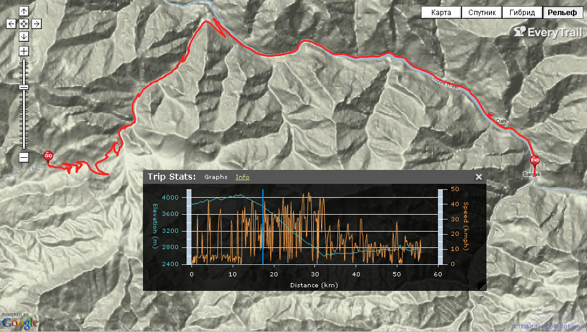
 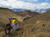 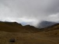 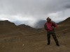
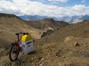 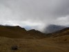 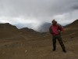  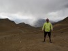 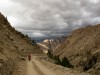 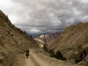 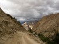 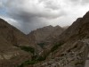 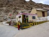
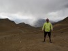 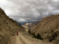 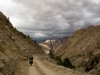 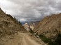 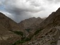 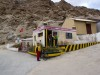